자연생태복원기사(구) (2017-03-05 기출문제)
1과목: 환경생태학개론
1. 탄소순환을 바르게 설명한 것은?
- 대기원에서 탄소는 주로 co2, co의 형태로 존재한다
- 생물체가 죽으면 미생물에 의하여 분해되어 유기태탄소로 돌아간다.
- 지구에서 탄소를 가장 많이 보유하고 있는 부분은 산림이다.
- 녹색식물에 의하여 유기태탄소가 무기태타소로 전환된다.
(정답률: 69%)

2. 포유류 조사 중 족적, 배설물, 식흔 등에 의한 종 확인방법에 해당되는 것은?
- field sign
- sand track
- snap trap
- point census
(정답률: 75%)
3. 조간대 패각류의 공기 중 노출에 관한 설명으로 옳지 않은 것은?
- 조개의 경우 좌우 패각을 닫으며, 따개비들은 자신들의 배판이나 순판을 닫아버린다.
- 복족류의 경우, 썰물 시 자신의 몸을 패각안으로 끌어들이여 입구를 뚜껑으로 닫아버린다.
- 많은 패각류가 두꺼운 표피나 패각을 이용해 수분 손실이나 과도한 열 흡입을 방지하고 있다.
- 일반적으로 상부조간대에 분포하는 종들이 하부조간대에 분포하는 종들에 비해 온도와 건조에 대한 내성이 약하다.
(정답률: 85%)
4. 국제 사회는 생물종의 감소에 대처하기 위하여 생물다양성을 보전할 수 있는 방안을 모색하였고, 그 결과 생물다양성 협약을 1992년 5월 나이로비에서 채택하였다. 우리나라가 이 협약에 가입한 연도는?
- 1992년
- 1994년
- 1998년
- 2000년
(정답률: 68%)
5. 기수호를 메우고 염습지나 조간대 지역을 개간하며 전체 해안을 직선적으로 획일화하거나 경성화 하는 연안개발에 대한 설명으로 옳지 않은 것은?
- 해안의 개발은 갯벌과 수로 역할을 하는 상부의 도랑들과 작은 규모의 염습지 등을 감소시키는 경향이 있으며, 각족 구조물들은 해안 상부의 모래언덕과 바다사이에서 일어나는 여러 물질의 상호 교환을 저해한다.
- 파랑이나 해일로부터 육상시설을 보호하기 위해서 건설되는 일부 건조물들은 해안선의 이질성과 서식지의 다양성을 감소시킨다.
- 해안 중간부분과 윗 부분의 경사가 급해지고 침식이 가중됨에 따라 구성입자의 크기가 점차 작아져 대체 갯벌이 생성되기도 하지만, 이러한 현상은 퇴적물의 안정화를 이루어 무척추동물의 생산성을 감소시키게 된다.
- 많은 어류와 바다새류의 수를 감소시켜 갯벌이 가지는 생물화학적 가치를 떨어뜨리게 할 뿐만 아니라 도요 물떼새류와 같은 이동 철새들의 중간기착지로서의 역할을 할수 없게 한다.
(정답률: 71%)
6. 아래 그림은 온대지방에서 수심이 깊은 호수의 환경요인 프로파일이다. 그래프 상의 실선과 점선이 나타내는 요인은?
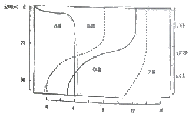
- BOD, COD
- 총질소, 총인
- 온도, 산소농도
- 압력, 수소이온농도
(정답률: 73%)
7. 어느 개체 또는 집단이 생존하고 증식하는 것이 여러 환경조건들이 조합되어 나타나는 결과라는 결합법칙을 주장한 사람은?
- Liebig
- Odum
- Shelford
- F. Muller
(정답률: 67%)
8. 다음 [보기]의 ㉠,㉡에 해당되는 것은?
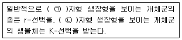
- ㉠ K ㉡ S
- ㉠ J ㉡ K
- ㉠ J ㉡ S
- ㉠ S ㉡ J
(정답률: 80%)
9. 해양생태계에서 조류(Algea)에 의해 분해 생성되며 분해 시 부산물과 함께 미생물의 주요 탄소원 및 성장원이 되는 유기 황 화합물은?
- Carbon disulfide
- Hydrogen sulfide
- Methane sulfonic acid
- Dimethyl sulfide
(정답률: 54%)
10. 육수생태계의 영향상태를 파악하기 위해 영양상태지표(Trophic Status Index : TSI, 1971, Carlson이 제안)는 생태계에 영향을 주는 3가지 요인들의 상관관계를 분석하여 0~100의 범위내로 구분하고 있다. 이러한 영양상태지표 3가지 요인에 포함되지 않는 것은?
- 인
- 클로로필
- 투명도
- 질소
(정답률: 47%)
11. 토양, 퇴적물 등의 물질로부터 미량성분을 추출하는데 다양한 방법들을 사용한다. 추출 방법 중 HNO3, HCI, HCIO4 등을 혼함해서 사용하거나 단일 시약으로 100℃ 또는 그 이상에서 1~2시간 동안 시료를 처리하는 방법은?
- 휘발법
- 융융법
- 약산추출법
- 강산추출법
(정답률: 59%)
12. 개체군간의 상호작용 결과 형태로 서로 이익을 주고받는 작용은?
- 포식
- 기생
- 상리공생
- 편리공생
(정답률: 83%)
13. 다음 중 온도 조건과 관련된 생물체에 대한 설명중 올바른 것은?
- 중온성(25℃~40℃) 미생물은 세포막에 포화된 지방산의 함량 증가 및 열에 내성을 갖는 효소를 합성함으로써 적응한다.
- 온도는 육상생태계와 수계생태계의 환경을 특징화하는 대상구조(zonation) 및 층상구조(stratification)를 구분하게 한다.
- 온도의 변화에 대한 적응도는 수서생물이 육상생물보다 뛰어나다.
- 저온성(5℃~15℃) 미생물은 내성의 한계를 벗어난 낮은 온도에서는 단백질 합성을 중지시킴으로서 내성한계를 벗어난 낮은 온도에 적응해간다.
(정답률: 59%)
14. 생태계에 있넌 주추종(Keystone Species)에 대한 설명으로 옳은 것은?
- 생물군집에 있어 생물 간 상호작용의 필요가 있고, 그 종이 사라지면 생태계가 변질된다고 생각되는 종
- 유사한 서식지나 환경조건에 발생하는 군락을 대표하는종
- 아름다움이나 매력에 의해 일반사람들에게 서식지 보호를 호소하는 데 효과적인 종
- 서식지의 축소, 남획 등으로 절멸이 우려되는 종
(정답률: 72%)
15. 생태계 계층구조를 작은 단위에서 큰단위로 바르게 나열한 것은?
- 개체-군집-생물군계-생물권
- 군집-개체군-생태계-생물권
- 경관-개체군-생물지리적지역-생물권
- 생물권-개체-개체군-지구환경
(정답률: 84%)
16. 밀도가 다른 두 수층의 경계면에 파랑이 생기는대 이를 내부파(internal wave)라고 한다. 이 내부파의 영향이 아닌 것은?
- 두 수층의 수직혼합을 일으킴
- 저층의 영양염을 상층에 공급
- 표층의 식물 플랑크톤 생산을 증가시킴
- 용승류가 일어남
(정답률: 48%)
17. 개체군 집합의 정도에 있어 과소는 과밀과 마찬가지로 생존에 대한 제한 요인이 된다는 것은 어떤 원리인가 ?
- Allee의 원리
- Bergmann의 원리
- Gause의 원리
- Liebig의 원리
(정답률: 59%)
18. 원자력 발전소 주변에서 일어날 수 있는 생태환경의 변화가 아닌 것은?(오류 신고가 접수된 문제입니다. 반드시 정답과 해설을 확인하시기 바랍니다.)
- 열오염
- 박무현상
- 생물학적 농축
- 수중생물의 질식
(정답률: 52%)
19. 2차 천이에 관한 설명으로 옳은 것은?
- 콘크리트 옥상에서 식물의 정착
- 노출된 암석에 지의류가 부차하기 시작하는 천이단계
- 이전 군집이 파괴된 곳에 새롭게 형성되는 군집의 정착
- 생물이 살지 않은 환경에 개척자 생물부터 시작하는 천이단계
(정답률: 75%)
20. 다음 중 해안사구의 보전을 위한 복원 및 훼손 방지 방법으로 사용하고 있지 않은 것은?
- 해안 사구식물의 식재 방법
- 사구 높이를 인위적으로 높여주는 방법
- Sand-trap fence에 의한 모래 집적방법
- 해변모래 공급을 위한 해구지형의 준설방법
(정답률: 55%)
2과목: 환경계획학
21. 도시지역 비오톱의 생태적 기능에 해당되지 않는 것은?
- 자연학습교육 및 체험장
- 도시민의 여가 및 휴식공간
- 환경오염에 대한 생태적 지표
- 난개발 방지를 위한 개발유보지
(정답률: 73%)
22. 국토의 계획 및 이용에 관한 법률에 근거하여 도시지역내 주거지역에서 100평의 땅을 가지고 있는 사람이 필로티가 없는 건축물을 신축한다면 법상 한도 내에서 가능한 건축물은?
- 바닥면적 60평의 10층 건축물
- 바닥면적 60평의 9층 건축물
- 바닥면적 70평의 10층 건축물
- 바닥면적 70평의 7층 건축물
(정답률: 63%)
23. 환경문제의 원인이라고 볼 수 없는 것은?
- 대기오염과 산성비
- 수질오염
- 생태계 파괴
- 인구의 감소
(정답률: 85%)
24. 다음 용도지역 중 최대 건폐율 한도가 다른 지역은?
- 녹지지역
- 계획관리지역
- 보전관리지역
- 자연환경보존지역
(정답률: 72%)
25. 환경특성을 짝지은 것으로 틀린 것은?
- 상호관련성, 광역성
- 광역성, 시차성
- 탄력성, 비가역성
- 엔트로피 감소, 지역성
(정답률: 73%)
26. 우리나라 난개발의 주요원인에 대한 설명이 잘못된 것은?
- 사전협의나 사전환경성 평가체계의 구축
- 환경친화적 계획 및 개발기법의 취약
- 지역별 개발용량을 고려하지 않음
- 녹지에 대한 계획기준이 없음
(정답률: 78%)
27. 6대 한반도 생태공동축 구축으로 기대되는 효과로 틀린 것은?
- 난개발, 환경오염 등으로 훼손된 지역과 생태계 복원기능
- 야생 동ㆍ식물의 서식환경으로 적합하여 고차종 야생동물의 유일한 서식지
- 생태축을 기준으로 침엽수림, 낙엽활엽수림대 등 뚜렷한 종 조성군 유지
- 북방계와 남밤계의 식물대가 교차하는 서식환경 등에 대한 지표활용
(정답률: 39%)
28. 도시를 하나의 유기적 복합체로 보아 다양한 도시활동과 공간구조가 생태계의 속성인 다양성, 자립성, 순환성, 안정성 등을 포함하는 인간과 자연이 공존할 수 있는 환경 친화적인 도시는?
- 메가도시티(Mega city)
- 생태도시티(Eco city)
- 압축도시티(Compact city)
- 스마트시티(Smart city)
(정답률: 82%)
29. 과거 준도시지역과 준농림지역을 합한 지역으로 도시주변에서 장래의 개발을 수용하기 위해 설정된 지역은?
- 녹지지역
- 계획지역
- 보전지역
- 관리지역
(정답률: 41%)
30. 다음 중 토지이용계획의 역할이 아닌 것은?
- 도시의 무계획적인 확산
- 정주환경의 현재와 장래의 공간구성
- 세부공간 환경설계에 대한 지침제시
- 사회의 지속가능성을 위한 토지의 보전
(정답률: 82%)
31. 국토환경보전계획의 3대 목표중 하나인 개발과 조화된 국토환경보전체계 구축을 위한 주요 추진전략 및 과제가 아닌 것은?
- 국토 환경 정보망 구축
- 국토환경지표개발
- 지역특성을 교려한 국토환경보전 방안 마련
- 국토환경성평가 및 평가지도 작성
(정답률: 60%)
32. 생태공원을 계획ㆍ설계할 때 고려해야 할 조건이 아닌 것은?
- 인간과 생물 간의 거리는 가능한 가깝게 하는 것이 좋다
- 생물종의 생활사 및 생육ㆍ서식공간의 특성을 충분히 이해해야 한다.
- 생물종이 사람의 관찰대상인가 아닌가에 따라 접촉 공간 설치 유무를 결정한다.
- 목표종의 서식환경을 조성하기 위해서는 서식공간의 최소면적에 관련된 전문가의 도움을 얻는다.
(정답률: 85%)
33. 하천의 주요기능으로 가장 거리가 먼 것은?
- 이수기능
- 위락기능
- 치수기능
- 환경기능
(정답률: 78%)
34. 생태 네트워크 계획 시 고려할 주요 내용의 설명으로 틀린 것은?
- 인간성 회복의 장이 되는 녹지 확보
- 생물의 생식ㆍ생육공간이 되는 녹지의 확보
- 국토종합계획상의 개발 방향에 따른 녹지 확보
- 생물의 생식ㆍ생육공간이 되는 녹지의 생태 적 기능 향상
(정답률: 64%)
35. 환경가치를 추정하는 데 가장 널리 이용되는 방법으로, 사람들이 환경에 부여하는 가치 혹은 환경개선에 대한 지불용의액을 사람들에 직접물어보는 방법은?
- 조건부가치추정방법
- 여행비용방법
- 속성가격기법
- 대체비용법
(정답률: 68%)
36. 녹지자연도의 등급별 토지이용 현황에 대한 연결로 틀린 것은?
- 1등급(시가지): 녹지식생이 거의 존재하지 않는 지구
- 3등급(과수원): 경작지이나 과수원, 묘포지 등과 같이 비교적 녹지식생의 분량이 우세한 지구
- 6등급(2차림): 1차적으로 2차람이라 불리는 대생식생지구
- 9등급(자연림) : 다층의 식물사회를 형성하는 천이의 마지막에 나타나는 극상림 지구
(정답률: 73%)
37. 국토환경성평가도를 평가하기 위해서는 각각의 평가항목을 등가중치법에 의해 평가항목별 가중치를 고려하지 않고, 최소 지표법을 이용하여 종합화한다. 최소지표법의 장법이 아닌 것은?
- 보전가치에 최고 가중치 부여
- 보전가치판단에 대한 자의성 방지
- 가치에 따른 점수화로 용도간 경쟁시 유리
- 토지가 가진 환경가치를 최우선적으로 반영
(정답률: 65%)
38. 생태주거단지의 단지배치를 위한 계획요소와 그 세부계획으로 적합하지 않은 것은?
- 적정밀도:생태적 수용능력 배제
- 자연지형 활용: 지형변화 최소화/미기후 활용
- 주차장: 단지 내 진입 배제/주차장 집중설치
- 주동배치: 수동적 에너지 활용/일조,통풍,조망 고려/내부 공간과의 연계
(정답률: 71%)
39. 자연환경보전법의 규정에 따란 산ㆍ하천ㆍ습지ㆍ호소ㆍ농지ㆍ도시ㆍ해양 등에 대하여 자연환경을 생태적 가치, 자연성, 경관적 가치등으로 등급화하여 작성된 지도는?
- 생태ㆍ자연도
- 녹지자연도
- 국토생태현황도
- 자연환경현황도
(정답률: 72%)
40. 다음 설명중 ( )에 알맞은 값은?
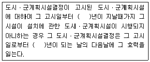
- 5
- 10
- 20
- 30
(정답률: 46%)
3과목: 생태복원공학
41. 다음 중 천이의 최상위에 해당하는 것은?
- 나대지
- 내음성 교목림
- 관목림
- 다년생 수목
(정답률: 71%)
42. 수변에서 식생의 기능으로 가장 거리가 먼 것은?
- 뿌리의 물 저장과 질소, 인 제거효과
- 다양한 미기후 형성으로 물고기의 산란처
- 수생생물에 알맞은 생육조건 제공
- 홍수시 제방의 훼손으로 재해의 원인
(정답률: 81%)
43. 다음의 토양수분상태 중에서 수분장력이 가장 높은 것은?
- 중력수
- 모세관수
- 흡습수
- 포장용수량
(정답률: 52%)
44. 물 순환체계의 특징을 설명한 것 중 옳지 않은 것은?
- 도심지역은 불투수성 표면의 증가로 물 부족 현상이 심화되고 있다.
- 수목이 증가하면 증산작용으로 미세기후가 변하며, 미세 온도, 습도, 등에 영향을 주는 효과가 있다.
- 지표수의 빠른 유출은 물 이용에 차질을 가져오며, 수변생태계를 파괴할 가능성이 높다.
- 빗물의 신속한 배수는 하천의 오염물질을 일시에 제거하여 도심의 하천 수질향상에 도움이된다.
(정답률: 70%)
45. 야생동물 이동로의 계획 및 설계시, 필요한 생태계의 악영향에 대한 경감방법을 계획할 때 적용하은 원리에 해당하지 않는 것은?
- 규모는 클수록 좋다.
- 기존연결로를 최대한 활용한다.
- 가능한 많은 생물종을 대상으로 한다.
- 다양한 형태보다는 대표적 형태의 연결로를 제공한다.
(정답률: 73%)
46. 식물의 생활사 중 개화와 종자생산에 의한 번식, 구근에 의한 영양번식을 함으로써 차세대를 생산 하는 시기는?
- 실생기
- 생육기
- 성숙기
- 과숙기
(정답률: 56%)
47. 복원하고자 하는 대상지역에 대해 훼손되기 이전의 상태와 훼손되는 원인과 과정을 거치면서 어떻게 변화했는지를 조사하는 방법은?
- 지역적 맥락의 조사
- 역사적 맥락의 조사
- 생태기반환경의 조사
- 생태환경의 조사
(정답률: 69%)
48. 훼손될 습지와 대체하려는 습지의 유형이 같은 것을 무엇이라고 하는가?
- in kind wetland
- out of kind wetland
- off site wetland
- on site wetland
(정답률: 64%)
49. 생태적 회랑(생태통로)의 부정적 효과가 아닌 것은?
- 포식기회의 증대
- 동물의 안전한 이동
- 동물의 접촉 감염 등에 의한 질병의 전엽
- 본래 일어나지 않을 유전적 교류의 조장
(정답률: 78%)
50. 대체서식지를 조성하기 위한 생태연못의 잠자리 서식 공간화에 있어 도입요소 및 세부조성기법의 설명으로 잘못된 것은?
- 갈대, 골풀 등 우화를 위한 수초군락을 수변에 시재
- 충분한 일조량을 확보하고 주변 산림이 인접하도록 하여서식처 간 상호 연계망을 확보
- 다양한 굴곡과 50% 이상의 개방수면을 가진 50m2 이상의 면적과 70cm 이상의 안정적인 수심, 완만하게 비탈진 호안
- 연못 방수의 경우 점착력이 강한 진흙, 논흙 등을 이용하는 것이 생태적으로 건전하여 유지용수 관리에 가장 유리
(정답률: 52%)
51. 녹화(revegetation)를 설명하는 것 중 옳지 않은 것은?
- 경관이 우수한 지역의 녹지를 개발하는 행위
- 훼손지 또는 민둥산 표면을 식물에 의해서 식재 피복하는 행위
- 식물의 생육이 불가능한 환경조건을 개선하는 행위
- 사막화 되어버린 지역에서 녹지를 재생하는 행위
(정답률: 79%)
52. 다음 중 동물산포에 해당하지 않은 것은?
- 부착형 산포
- 피식형 산포
- 기계산포
- 저식형산포
(정답률: 77%)
53. 환경포텐셜 유형 중에서 기후, 지형, 수환경, 토양 등의 토지적 조건이 특정생태계의 성립에 영향을 미칠 가능성이 있는 것은?
- 종의 공급 포텐셜
- 종간 관계포텐셜
- 입지 포텐셜
- 천이 포텐셜
(정답률: 75%)
54. 생태복원의 각 단계를 설명한 것으로 틀린 것은?
- 목표설정이란 생태계와 인공계의 관계를 조정할 때 구체적인 수준을 정하는 것이다.
- 시공은 목표종의 서식에 적합한 공간을 만드는 것으로 종의 생활사를 고려하여야 한다.
- 조사 및 분석에서 생태계는 지역마다 그 특징이 유사하므로 대표적인 지역에 대한 조사만 수행해도 된다.
- 계획은 생태계와 인공계의 관계를 공간적인 배치에 의해 조정함과 동시에 생태계의 질, 크기, 배치 등을 결정하는 것이다.
(정답률: 80%)
55. 수고 7~12m 정도의 교목을 식재하고자 할때 자연토의 적합한 유효 토심의 깊이는?
- 상층 60cm, 하층 90㎝
- 상층 60㎝, 하층 20㎝
- 상층 30㎝, 하층 20㎝
- 상층 20㎝, 하층 20㎝
(정답률: 51%)
56. 생태적 복원 공법 중 다음 설명에 해당하는 공법은?
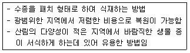
- Naturalization
- Natural Regeneration
- Nucleation
- Managed Succession
(정답률: 57%)
57. 광산의 복원기법 중에서 자연화 방법과 콜로니화 방법은 무슨 공법에 해당하는가?
- 녹화공법
- 생태적 공법
- 결합 Hybrid
- 산림표토층 이용공법
(정답률: 58%)
58. 수신기와 야기안테나를 이용하여 2~3곳에서 동시에 발신기로부터의 방위각을 측정한 후 삼각측량의 원리를 이용하여 추적동물의 위치를 파악하는 방법은?
- VHF 방식
- GSM 방식
- CDMA 방식
- Stored on board 방식
(정답률: 53%)
59. 생물다양성 증진을 위한 습지를 조성하고자 할 경우, 개방수면의(open water)의 적정 비율은?
- 15%
- 20%
- 50%
- 100%
(정답률: 69%)
60. 산림 및 도시생태계 복원을 위한 기본적인 원칙으로 바람직하지 않은 것은?
- 대상지의 훼손정도에 따라 다르게 설정하는 것이 필요하다
- 훼손정도가 약한 지역에 있어서는 긴급한 복원을 통해 확산을 방지한다.
- 자연적인 복원이 어려운 지역에 대해서는 최소한의 에너지 투입으로 자연계의 회복력을 촉진시키는 복원 방법을 선택한다.
- 방치하면 확산이 우려되는 지역은 기반안정, 생물종 도입 등 적극적인 복원 방법이 필요하다.
(정답률: 71%)
4과목: 경관생태학
61. 국내의 산림녹지 관련 도면이 아닌 것은?
- 임상도
- 녹지자연도
- 현존식생도
- 지적도
(정답률: 76%)
62. 도시가 기후에 미치는 영향으로 틀린 것은?
- 도시의 구조물들은 농천에 비해 표면적이 좁다
- 도시대기 중의 부유입자가 태양빛과 열을 반사시킨다.
- 도시와 농촌의 기후차이는 구성재료의 차이에 기인한다.
- 도시의 냉ㆍ난방 장치의 사용이 열섬효과를 가져온 원인 중 하나이다.
(정답률: 69%)
63. GIS의 구성요소를 가장 올바르게 나열하고 있는 것은?
- 셀, 레스터, 소프트웨어
- 이용자, 방법, 레스터
- 하드웨어, 소프트웨어, 백터
- 자료, 소프트웨어, 이용자
(정답률: 72%)
64. 자연경관의 유형에 속하지 않는 것은?
- 산림
- 해안 및 도서
- 호수 및 습지
- 대규모 아파트 단지
(정답률: 83%)
65. 하천코리더의 설계기준과 관련된 설명으로 옳은 것은?
- 하천코리더는 낮은 하천차수의 지류를 제외하고 노선을 선정한다.
- 2개 이상의 하천이 만나는 지역은 생태적으로 불완전하므로 인공적인 보강시설을 도입한다.
- 최소한 포함되어야 할 지역은 하천 충적지와 하천변 식생, 습지 하천의 지하수 체계이다.
- 침전물의 유입이 많고 여과를 위한 폭이 불충분할 때는 저밀도 식생에 의한 제방을 도입한다.
(정답률: 56%)
66. 해류의 종류 중 하나로 압력경도력과 전향력의 두 힘이 평형을 이루면서 일어나는 해수의 운동은?
- 취송류
- 지형류
- 경사류
- 밀도류
(정답률: 54%)
67. 비오톱 타입에 따른 재생능력이 잘못 설명된 것은?
- 부영양수역 식생의 경우 재생에는 8~15년이 필요하다.
- 1년생 초본군락이 재생하는데 필요한 시간은 1~4년이 필요하다
- 식재에 의해 조성된 울타리의 경우 재생에는 50~100년이 필요하다
- 채석장, 동굴에만 서식하는 종은 이입하는데 100~200년이 필요하다
(정답률: 73%)
68. 비오톱에 대한 설명으로 거리가 먼 것은?
- 특정한 식물이나 생물군집이 생존할 수 있는 환경조건을 갖춘 토지이다.
- 개체 혹은 개체군의 생활환경으로서 장소 가 아니라 물리적 위치로 파악된다.
- 다양한 야생동ㆍ식물과 미생물이 서식하고 자연의 생태계가 가능하는 공간을 의미한다.
- 순수한 자연생태계의 보전복원을 위해 사람이 들어가지 못하는 핵심지역을 설정한다.
(정답률: 65%)
69. 댐의 기능적인 구분이 잘못 연결된 것은?
- 저수댐-물을 저장하여 부족한 시긱에 공 급
- 확수댐-유수를 장시간 저류하여 모래층에 침투하도록 함
- 침수댐-물을 필요한 곳으로 보내기 위한 용도로 건설된 댐
- 지체댐-상류의 범람을 막기위하여 일시적으로 하류로 방류하는 댐
(정답률: 47%)
70. 도서생물지리학 이론 중 틀린 것은?
- 섬의 크기가 클수록 멸종률은 낮다.
- 섬과 육지의 거리가 멀수록 이입률은 낮다.
- 섬의 크기와 거리는 섬에 출현하는 생물종 수를 결정한다.
- 섬의 저지대 생물종은 고지대 생물종에 비해 출현종 수가 적다.
(정답률: 82%)
71. UNESCO에서 제안한 보전지역관리를 위한 용도지역 구분이 아닌 것은?
- 핵심지역
- 완충지역
- 수변지역
- 전이지역
(정답률: 83%)
72. 보전 및 복원해야 할 대상인 자연보호구의 가치가 아닌 것은?
- 유전자원의 제공
- 환경교육의 장소제공
- 자연 및 생물다양성의 보전
- 다른 지역으로의 생물이동 방해
(정답률: 80%)
73. GIS 기능적 요소의 처리순서로 맞는 것은?
- 자료획득→자료전처리→자료관리→조정과 분석→결과출력
- 자료전처리→ 자료관리→조정과 분석→결과 출력 → 자료획득
- 조정과 분석→결과추력→자료획득→자료관리→자료전처리
- 조정과 분석→자료획득→자료전처리→자료관리→자료출력
(정답률: 71%)
74. 자연보호구에서 야생동물 개체군의 보전을 위해 가장 시급한 것은?
- 충분한 면적을 확보
- 기후변화에 따른 파급효과 고려
- 보전프로그램 및 모니터링 기법
- 전통적 토지이용과 자원채취 허용
(정답률: 61%)
75. 임상도에서 얻을 수 있는 정보가 아닌 것은?
- 경급
- 영급
- 종다양성
- 주요 수정
(정답률: 68%)
76. 등질지역과 결절지역의 관계는 토지이용 측면에서 중요한 의미를 갖는다. 다음 중 토지이용 측면에서 같은 수준의 공간단위를 바르게 묶은 것은?
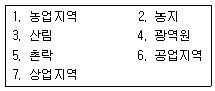
- 1, 3, 4
- 1, 2, 4
- 1, 5, 6
- 2, 3, 5
(정답률: 68%)
77. 해안경관의 대표적 유형으로 볼 수 없는 것은?
- 호수
- 갯벌
- 사구
- 식생해안
(정답률: 78%)
78. 경관생태학에 대한 개념 설명과 가장 거리가 먼 것은?
- 조경과 토지관리 및 계획 그리고 인문지리와 생태학분야의 총체적 접근을 시도
- 여러 가지 다른 요소로 이루어져 있는 총체적인 실체로서 토지를 고려하는 지리학적 접근을 시도
- 공간적인 이질성의 발달, 역동성, 시공간적 상호작용과 교환 원리를 고려
- 개체, 가족, 사회 및 군집의 발달 원리를 연구하는 학문 분야
(정답률: 80%)
79. 생태축의 역할로 틀린 것은?
- 도시생태계의 다양성 확보
- 개체군 간의 유전적 다양성 증대
- 생물의 근친교배에 따른 우성형질 발현
- 소규모 서식처의 연결로 생물 이동성 보장
(정답률: 78%)
80. 야생동물 측면에서의 코리더 역할을 서술한 것으로 가장 거리가 먼 것은?
- 메타개체군 형성에 기여한다.
- 계절적으로 또는 일상적으로 야생동물의 이동이 가능하도록 해준다.
- 동물의 유전자 이동을 도와 개체군간 유전자의 흐름으로 유전적 다양성을 유지시켜준다.
- 내부 서식처를 제공하여 동물들이 풍부하게 서식하고 자연적 간섭의 피해를 최소화할 수 있다.
(정답률: 64%)
5과목: 자연환경관계법규
81. 생물다양성 보전 및 이용에 관한 법률 시행령상 환경부장관은 국내에 서식하는 모든 생물종에 대하여 국가생물종 목록을 구축하도록 되어 있는데, 이 국가 생물종 목록 구축에 피요한 자료와 가장 거리가 먼 것은?
- 생물종의 영명 및 근연종명
- 종별 생태적ㆍ분류학적 특징
- 종별 주요 서식지 및 국내 분포현황
- 조사자, 조사기간 및 조사방법
(정답률: 59%)
82. 자연환경보전법령상 생태계보전협력급의 단위면적당 부과금액은 제곱미터당 얼마로 하는가?
- 100원
- 300원
- 1000원
- 3000원
(정답률: 69%)
83. 자연환경보전법상 생태ㆍ경관보전지역 지정기준과 거리가 먼 것은?(단, 그 밖의 사항 등은 제외)
- 생태계의 표본지역
- 생테계가 최근에 형성된 지역
- 다양한 생태계를 대표할 수 있는 지역
- 지형 또는 지질이 특이하여 학술적 연구를 위하여 보전이 필요한 지역
(정답률: 76%)
84. 독도 등 도서지겨의 생태계 보전에 관한 특별법상 환경부장관이 특정도서의 자연생태 등을 보전하기 위한 특정도서보전 기본계획을 몇 년마다 수립하여야 하는가?
- 2년마다
- 3년마다
- 5년마다
- 10년 마다
(정답률: 64%)
85. 환경정책기본법령상 각 항목별 대기환경기준 으로 옳지 않은 것은?
- 아황산가스 (so2)의 1시간 평균치는 0.15 ppm이하이다.
- 아황산질소(no2)의 연간평균치는 0.03ppm 이하이다.
- 오존(o3)의 1시간 평균치는 0.1ppm이하다.
- 벤젠의 연간평균치는 0.5㎍/m3이하이다.
(정답률: 53%)
86. 야생생물보호 및 관리에 관한 법률상 멸종위기 야생생물Ⅱ급을 포획ㆍ채취ㆍ훼손하거나 고사시킨 자에 대한 벌칙 기준으로 옳은 것은?
- 7천만원 이하의 벌금
- 5년 이하의 징역 또는 500만원 이상 5천만원 이하의 벌금
- 3년 이하의 징역 또는 300만원 이상 3천만원 이하의 벌금
- 2년 이하의 징역 또는 2천만원 이하의 벌금
(정답률: 54%)
87. 환경정책기본법상 이 법에서 사용하는 용어의 뜻으로 옳지 않은 것은?
- “환경복원”이란 환경오염 및 환경훼손으로부터 환경을 보호하고 오염되거나 훼손된 환경을 개선함과 동시에 쾌적한 환경의 상태를 유지ㆍ조성하기 위한 행위를 말한다.
- “환경용량”이란 일정한 지역에서 환경오염또는 환경훼손에 대하여 환경이 스스로 수용, 정화 및 복원하여 환경의 질을 유지할 수 있는 한계를 말한다.
- “생활환경”이란 대기, 물, 토양, 폐기물, 소음ㆍ진동, 악취, 일조, 인공조명 등 사람의 일상생활과 관계되는 환경을 말한다.
- “환경훼손”이란 야생동식물의 남획 및 그 서식지의 파괴, 생태계질서의 교란, 자연경관의 훼손, 표토의 유실 등으로 자연환경의 본래적 기능에 중대한 손상을 주는 상태를 말한다.
(정답률: 62%)
88. 다음은 백두대단 보호에 관한 법률 시행령상 토지 등의 매수청구 절차에 관한 사항이다. ( )안에 가장 적합한 것은?
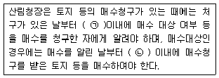
- ㉠ 15일, ㉡ 30일
- ㉠ 30일, ㉡ 1년
- ㉠ 60일, ㉡ 1년
- ㉠60일, ㉡ 3년
(정답률: 46%)
89. 다음은 자연공원법상 용어의 뜻이다. ( )안에 적합한 것은?
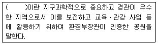
- 지질공원
- 역사공원
- 자연휴양림 공원
- 테마공원
(정답률: 81%)
90. 국토의 계획 및 이용에 관한 법류에 의한 국토의 용도구분에 해당되지 않은 지역은?
- 도시지역
- 농업진흥지역
- 관리지역
- 자연환경보전지역
(정답률: 70%)
91. 야생생물 보호 및 관리에 관한 법률 시행규칙상 멸종위기 야생생물 Ⅱ급에 해당하는 것으로만 구성되어 있는 것은?
- 삵, 두루미, 긴꼬리투구새우, 제주고사리삼
- 가창오리, 암매, 산굴뚝나비, 노랑붓꽃
- 호사비오리, 모래주사, 물장군, 독미나리
- 개구리매, 비단벌레, 저어새, 개병풍
(정답률: 46%)
92. 자연환경보전법상에 명시된 사항으로 옳지 않은 것은?
- 환경부장관은 전국의 자연환경보전을 위한 기본계획을 10년마다 수립하여야 한다.
- 자연환경보전기본계획은 중앙환경정책위원회의 심의를 거쳐 확정한다.
- 시ㆍ도지사는 관계중앙행정기관의 장과 협조하여 생태ㆍ자연도에서 1등급 권역으로 분류된 지역과 자연상태의 변화를 특별히 파악할 필요가 있다고 인정되는 지역에 대하여 매년 자연환경을 조사해야한다.
- 자연환경 조사의 내용ㆍ방법 그 밖의 필요한 사항은 대통령령으로 정한다.
(정답률: 56%)
93. 국토기본법상 국토계획에 관한 설명중 옳지 않은 것은?
- 국토종합계획: 국토전역을 대상으로 하여 국토의 장기적인 발전방향을 제시하는 종합계획
- 도종합계획 : 도 또는 특별자치도의 관할구역을 대상으로 하여 해당 지역의 장기 적인 발전 방향을 제시하는 종합계획
- 부문별계획 : 전역을 대상으로 하여 특정 부문에 대한 장기적인 발전방향을 제시하는 계획
- 지역계획 : 국토전역을 대상으로 하여 특정부문에 대한 장기적인 발전방향을 제시하는계획
(정답률: 68%)
94. 다음은 습지보전법상 습지지역의 지정 등에 관한 사항이다. ( )안에 가장 적합한 것은?
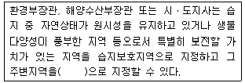
- 습지보호완충지역
- 습지주변관리지역
- 습지개선관리지역
- 습지주변완충지역
(정답률: 45%)
95. 환경정책기본법상 국가 및 지방자치단체가 환경기준이 유지되도록 환경 관련 법령 제정과 행저계획의 수립, 사업 등을 집행 할 경우 고려사항으로 가장 거리가 먼 것은?
- 환경 악화의 예방 및 그 요인의 제거
- 환경오염지역의 원상회복
- 새로운 과학기술의 사용으로 인한 환경오염의 예방
- 산업경기 활성화 촉진 및 설비투자 장려를 위한 첨단기술 개발
(정답률: 78%)
96. 야생생물 보호 및 과리에 관한 법률 시행규칙상 시ㆍ도지사가 행하는 수렵먼허 시험의 합격자 발표일 기준으로 옳은 것은?
- 시험실시 후 10일 이내에
- 시험실시 후 15일 이내에
- 시험실시 후 30일 이내에
- 시험실시 후 45일 이내에
(정답률: 47%)
97. 국토의 계획 및 이용에 관한 법류상 다음 용도지역 안에서 건폐율의 최대한도 기준으로 옳은 것은?
- 농림지역 : 20퍼센트 이하
- 보전관리지역 : 40퍼센트 이하
- 녹지지역 : 70퍼센트 이하
- 자연환경보전지역 : 40퍼센트 이하
(정답률: 59%)
98. 다음은 백두대간 보호에 관한 법률 시행령상 백두대간보호지역의 지정ㆍ지정해제 및 구역변경에 관한 고시 등에 관한 사항이다. ( )안에 가장 적합한 것은?
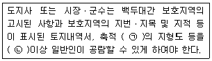
- ㉠ 5천분의 1 이상, ㉡ 10일
- ㉠ 5천분의 1 이상, ㉡ 20일
- ㉠ 2만 5천분의 1 이상, ㉡ 10일
- ㉠ 2만 5천분의 1 이상, ㉡ 20일
(정답률: 45%)
99. 다음은 국토의 계획 및 이용에 관한 법률상 이법에서 사용하는 용어의 뜻에 관한 사항이다. ( )안에 알맞은 것은?
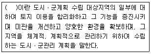
- 개발단위계획
- 개발실시계획
- 지구단위계획
- 도시기반계획
(정답률: 72%)
100. 다음은 자연공원법규상 점용료 또는 사용료율 기준이다. ( )안에 알맞은 것은?
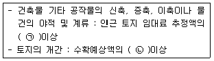
- ㉠ 100분의 20, ㉡ 100분의 25
- ㉠ 100분의 20, ㉡ 100분의 50
- ㉠ 100분의 50, ㉡ 100분의 25
- ㉠ 100분의 50, ㉡ 100분의 50
(정답률: 74%)